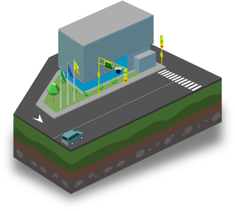

Tec-Intraf


Sistema Centralizado de Gestión de Semáforos
Consiste en comunicar en tiempo real todos los semáforos de un espacio geográfico determinado de forma remota desde una sala central. Permite de manera simultánea planificar, controlar, sincronizar y monitorear el estado y funcionamiento de las intersecciones semafóricas.
Si desea conocer más sobre este producto, descargue el folleto informativo aquí.
Sistema de Información de Tránsito
Servicio que permite visualizar datos del tránsito en tiempo real y las estadísticas asociadas. También propone planes óptimos de control dinámico, de acuerdo al flujo vehicular, respetando políticas grupales. Optimiza la circulación para los distintos escenarios de forma automatizada.
Si desea conocer más sobre este producto, descargue el folleto informativo aquí.
Simulador de Tránsito
Es la herramienta líder en microsimulación que permite evaluar de manera precisa y confiable las situaciones actuales del tráfico vehicular, así como también proponer y validar las diversas propuestas para preparar soluciones efectivas. Se ofrece un conjunto de cursos de adiestramiento que permite al especialista en tránsito aprovechar al máximo el potencial de esta herramienta.
Si desea conocer más sobre este producto, descargue el folleto informativo aquí.
Circuito Cerrado de Visualización de Tráfico (CCVT)
Es el sistema de apoyo fundamental para el operador que permite visualizar y controlar en tiempo real, desde una sala cental, imágenes del tráfico que proporcionan mayor cantidad de información para la toma de decisiones. El diseño está especializado para monitorear el tránsito, a través de nuestra innovadora tecnología de tráfico ligero de datos.
Si desea conocer más sobre este producto, descargue el folleto informativo aquí.
Visual Traffic
Servicio de visualización del estado del tráfico en tiempo real mediante la publicación de imágenes a través de la web y dispositivos móviles. Permite al usuario obtener información sobre el tránsito por medio de una interfaz atractiva y fácil de navegar.
Si desea conocer más sobre este producto, descargue el folleto informativo aquí.
InTraffic In-Situ
Consiste en la recolección de datos suministrados por una red de sensores, traducidos y analizados por nuestro sistema y la publicación del tiempo recorrido en forma dinámica a los usuarios. Esta información se presenta a través de pantallas ubicadas en el sitio para la toma oportuna de decisiones en tiempo real. Informamos oportunamente en el sitio.
Si desea conocer más sobre este producto, descargue el folleto informativo aquí.
El crecimiento progresivo de las ciudades, la necesidad de comunicar espacios geográficos, la contaminación ambiental y la congestión vehicular son factores que afectan nuestra vida diariamente. Cada vez es más necesaria la existencia de sistemas de transporte público masivo apoyados en soluciones inteligentes que den respuestas efectivas a estos problemas.
ViKua, enfocada siempre en la mejora de la calidad de vida de los ciudadanos, dedica parte de sus esfuerzos al diseño de múltiples modelos de los globalmente conocidos Sistemas Inteligentes de Transporte (SIT), adaptables y flexibles a las demandas de cada ciudad. Estos modelos están salvando el tiempo, el dinero y la vida de la gente alrededor del mundo gracias al aprovechamiento de las innovaciones en materia de tecnología.
Nuestras soluciones para el transporte público se traducen en grandes beneficios para la sociedad:
•Planificación integral del sistema;
•Generación de nuevos empleos;
•Mejoras en la calidad del servicio al usuario;
•Aumento de los índices de seguridad durante la operación a través de sistemas de vigilancia avanzados;
•Manejo confiable de información de gestión y estadísticas;
•Control de la evasión del pago de la tarifa;
•Mayor rentabilidad y optimización operacional;
•Control y fiscalización de todos los actores y componentes del sistema de movilidad,
•Integración multimodal y tarifaria.
Para estructurar este modelo, es posible comenzar con un sistema avanzado para el recaudo de la tarifa, un sistema de gestión de flotas y un sistema integrado de información al pasajero, todos unificados en un ambiente común de acceso, gestión y reporte. Los sistemas integrales de transporte permiten establecer las bases para la restructuración de redes de transporte público y es el punto de partida para el ordenamiento urbano y la base principal para poder construir una ciudad más inteligente.
Si desea conocer más sobre estas soluciones, descargue el folleto informativo aquí.
Como parte del robustecimiento de la gestión de Seguridad Vial, ViKua presenta opciones que mitigan los principales problemas que afectan la movilidad y seguridad de los ciudadanos.
Mediante la instalación de cámaras IP, sensores y equipos de telecomunicaciones y transmisión de datos, es posible mantener a las autoridades informadas sobre el volumen y tipo de vehículos que transitan, alertar si alguno excede los límites de velocidad, altura y peso permitidos, almacenar la data para generar estadísticas y transmitir esta información a una sala central. De esta forma, las autoridades pueden tomar decisiones en tiempo real y asistir a los conductores en caso de emergencias.
Un apoyo adicional a los funcionarios es el sistema automatizado en el cual se pueden registrar las infracciones cometidas y que esta información sea cruzada con otras bases de datos para tener el historial del vehículo y tomar las medidas establecidas según sea el caso.
También se dotan las vías de módulos de asistencia vial equipados con teléfonos, cámaras, iluminación especial y seguridad para que el conductor pueda superar cualquier incidente en la vía y sea atendido de manera oportuna.
Todos estos esfuerzos se realizan de forma preventiva para evitar accidentes, proteger la vida del conductor y de cualquier ciudadano que transite en la vía.
Nuestras soluciones
Control de Conteo Vehicular y Medición de Velocidad
• Conteo vehicular clasificado
• Medición de velocidad promedio
• Generación y transmisión de datos estadísticos
• Visualización remota
• Interfaz gráfica para manejo de datos
• Transmisión de imágenes por evento
Sistema Automatizado de Detección de Placas
• Lectura y captura continua de placas
• Generación de base de datos de placas capturadas
• Integración con sistemas de control de altura y peso
• Transmisión de imágenes por evento
• Generación de alertas por identificación de placas solicitadas
• Transmisión de alertas en tiempo real
• Administración y visualización remota
Sistema de Control de Peso y Altura
• Identificación de vehículos con posible exceso de altura o peso
• Generación de alertas
• Transmisión de alertas en tiempo real
• Generación de base de datos con registro de eventos
• Integración con sistemas de captura de placa
Sistema Automatizado de Registro de Infracciones
• Detección de la falta
• Registro de los datos del vehículo y tipo de infracción
• Comparación con otras bases de datos
• Almacenamiento de la información
• Sistemas complementarios para el cobro de multas
Módulos de Asistencia Vial para Emergencias
• Selección y adecuación del espacio para la construcción del módulo
• Instalación de la infraestructura: cámaras, iluminación y teléfonos
• Acondicionamiento para transmisión de datos vía WIFI y 3G
• Comunicación con Centros de Atención de Emergencia
Si desea conocer más sobre estas soluciones, descargue el folleto informativo aquí.